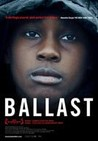
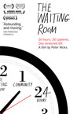
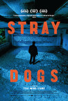
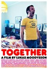
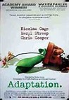
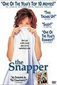
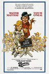
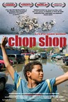

Movie Releases By Score


|
601.
Lagaan: Once Upon a Time in India
Release Date:
May 8, 2002

The year is 1893 when Britain's Queen Victoria was the unsympathetic ruler of India. This is an inspiring story of a battle without bloodshed fought by a group of unlikely heroes. (Sony Pictures Classics)
|

|
602.
No Man's Land
Release Date:
December 7, 2001

Ciki and Nino, a Bosnian and a Serb, are soldiers stranded in No Man's Land -- a trench between enemy lines during the Bosnian war. They have no one to trust, no way to escape without getting shot, and a fellow soldier is lying on the trench floor with a spring-loaded bomb set to explode beneath him if he moves. The absurdity of their situation would be comical if it didn't have such dire consequences. (United Artists / MGM)
|

|
603.
The Remains of the Day
Release Date:
November 5, 1993
Set just prior to World War II, this film focuses on the butler (Hopkins) in an English country home.
|

|
604.
Aferim!
Release Date:
January 22, 2016
Eastern Europe, 1835. Two riders cross a barren landscape in the middle of Wallachia. They are the gendarme Costandin and his son. Together they are searching for a gypsy slave who has run away from his nobleman master and is suspected of having an affair with the noble's wife. While the unflappable Costandin comments on every situation with a cheery aphorism, his son takes a more contemplative view of the world. On their odyssey they encounter people of different nationalities and beliefs: Turks and Russians, Christians and Jews, Romanians and Hungarians. Each harbors prejudices against the others which have been passed down from generation to generation. And even when the slave Carfin is found, the adventure is far from over. [Big World Pictures]
|

|
605.
War Witch
Release Date:
March 1, 2013
Komona (Rachel Mwanza) is only 12 years old when she is kidnapped by rebel soldiers and enslaved to a life of guerrilla warfare in the African jungle. Forced to commit unspeakable acts of brutality, she finds hope for survival in protective, ghost-like visions and in a tender relationship with a fellow soldier named Magician (Serge Kanyinda). Together, they manage to escape the rebels' clutches, but their freedom proves short-lived. Komona then decides she must make amends with her past. [Tribeca Film]
|

|
606.
Darwin's Nightmare
Release Date:
August 3, 2005
Darwin's Nightmare is a tale about humans between the North and South, about globilization and about fish. (Cellulois Dreams)
|

|
607.
Aliens
Release Date:
July 18, 1986
In this action-packed sequel to Alien, Sigourney Weaver returns as Ripley, the only survivor from mankind's first encounter with the monstrous Alien. Her account of the Alien and the fate of her crew are received with skepticism - until the mysterious disappearance of colonists on LV-426 leads her to join a team of high-tech colonial marines sent in to investigate. [20th Century Fox]
|

|
608.
My Winnipeg
Release Date:
June 13, 2008
Have you ever wanted to relive your childhood and do things differently? Guy Maddin casts B-movie icon Ann Savage as his domineering mother in attempt to answer that question in My Winnipeg, a hilariously wacky and profoundly touching goodbye letter to his childhood hometown. A documentary (or "docu-fantasia" as Maddin proclaims) that inventively blends local and personal history with surrealist images and metaphorical myths, the film covers everything from the fire at the local park which lead to a frozen lake of distressed horse heads to pivotal and factually heightened scenes from Maddin's own childhood, all laced with a startling emotional honesty. My Winnipeg is Maddin's most personal film and a truly unique cinematic experience, winning the best Canadian film at the Toronto International Film Festival and the opening night selection of the Berlin Film Festival's Forum. [IFC Films]
|

|
609.
Mystic River
Release Date:
October 8, 2003
As the investigation of the death of a young woman tightens around three old friends, and ominous story unfolds that revolves around friendship, family and innocence lost too soon. (Warner Bros.)
|

|
610.
We the Animals
Release Date:
August 17, 2018
Us three. Us brothers. Us kings, inseparable. Three boys tear through their childhood, in the midst of their young parents’ volatile love that makes and unmakes the family many times over. While Manny and Joel grow into versions of their loving and unpredictable father, Ma seeks to shelter her youngest, Jonah, in the cocoon of home. More sensitive and conscious than his older siblings, Jonah increasingly embraces an imagined world all his own.
|

|
611.
Oslo, August 31st
Release Date:
May 25, 2012
Thirty-four-year-old Anders is a fortunate, but deeply troubled man battling drug addiction. As part of his rehabilitation program, he is allowed to go into the city for a job interview, but instead uses the opportunity as a way to drift around and revisit old friends. The day grows increasingly difficult as he struggles to overcome personal demons and past ghosts for the chance at love and a new life. (Strand Releasing)
|
|
|
612.
Looper
Release Date:
September 28, 2012
In Looper, time travel exists, but it is illegal and only available on the black market. When the mob wants to get rid of someone, they send their target 30 years into the past, where a “looper” – a hired gun, like Joe – is waiting to mop up. Joe is doing good as a looper until the day the mob decides to “close the loop,” sending back Joe’s future self for assassination. (TriStar Pictures)
|

|
613.
Graduation
Release Date:
April 7, 2017
Romeo Aldea (Adrian Titieni) is a seemingly honest doctor who regrets having settled in his native Romania, a country still teeming with corruption and back dealings. He channels his ambitions for a better life into his teenage daughter, Eliza (Maria Dragus), who’s just one exam away from securing a scholarship to a prestigious British university. But when Eliza is attacked on the eve of her test, endangering her ability to pass, Romeo takes matters into his own hands to ensure her success. [Sundance Selects]
|

|
614.
Kubo and the Two Strings
Release Date:
August 19, 2016
Clever, kindhearted Kubo ekes out a humble living, telling fantastical stories to the people of his seaside town. But his relatively quiet existence is shattered when he accidentally summons a mythical spirit from his past which storms down from the heavens to enforce an age-old vendetta. Now on the run, Kubo joins forces with Monkey and Beetle and sets out on a thrilling quest to save his family and solve the mystery of his fallen father, the greatest samurai warrior the world has ever known. With the help of his shamisen – a magical musical instrument – Kubo must battle gods and monsters, including the vengeful Moon King and the evil twin Sisters, to unlock the secret of his legacy, reunite his family and claim his heroic destiny.
|

|
615.
The Other Side of Hope
Release Date:
December 1, 2017
Displaced Syrian Khaled (Sherwan Haji) lands in Helsinki as a stowaway; meanwhile, middle-aged salesman Wikström (Sakari Kuosmanen) leaves behind his wife and job and buys a conspicuously unprofitable seafood restaurant. After Khaled is denied asylum, he decides not to return to Aleppo—and the paths of the two men cross fortuitously. [Janus Films]
|

|
616.
Momma's Man
Release Date:
August 22, 2008
Momma’s Man chronicles the increasingly anxious dilemma of Mikey, a young husband and father who stops off at his parents’ loft during a business trip to New York and finds himself emotionally unable to leave. Unsure of his own motivations, he makes up excuses about why he’s staying – his flight is delayed; his flight is canceled – but while his doting mother (the director’s real mother) is more than happy to enable his procrastination, his father (the director’s real father) grows suspicious of his sons changes of plans. (Kino International)
|
|
|
617.
Old Joy
Release Date:
September 20, 2006
Old Joy is the story of two old friends, Kurt (Oldham) and Mark (London), who reunite for a weekend camping trip in the Cascade mountain range east of Portland, Oregon. (Kino International)
|

|
618.
Kings & Queen
Release Date:
May 13, 2005
This film expertly mixes comedy, tragedy and melodrama to tell the emotionally gripping story of the intersecting lives of two former lovers. (Wellspring Media)
|

|
619.
Shrek
Release Date:
May 18, 2001
Once upon a time in a far away swamp, there lived an ornery ogre named Shrek (Myers) whose precious solitude is suddenly shattered by an invasion of annoying fairy-tale characters. (Dreamworks SKG)
|

|
620.
In Fabric
Release Date:
TBA
In Fabric, is a haunting ghost story set against the backdrop of a busy winter sales period in a department store and follows the life of a cursed dress as it passes from person to person, with devastating consequences..
|

|
621.
You Were Never Really Here
Release Date:
April 6, 2018
A traumatized veteran, unafraid of violence, tracks down missing girls for a living. When a job spins out of control, Joe's nightmares overtake him as a conspiracy is uncovered leading to what may be his death trip or his awakening.
|

|
622.
In the Name of the Father
Release Date:
December 29, 1993
Academy Award winner Daniel Day-Lewis gives an impassioned performance in this riveting drama that mirrors one man's 15-year struggle and ultimate triumph over a terrible injustice. [Universal Studios]
|

|
623.
Ray & Liz
Release Date:
TBA
|
|

|
624.
Ballast
Release Date:
October 1, 2008
In the cold, winter light of a rural Mississippi Delta township, a man’s suicide radically transforms three characters’ lives and throws off-balance what has long been a static arrangement among them. Marlee is a single mother struggling to scratch a living for herself and James, her 12-year-old son, who has begun to stumble under drug and violence pressures. So when the opportunity to seek safe harbor at a new home arises, she grabs it, though the property is shared by Lawrence, a man with whom Marlee has feuded bitterly since James’s birth. With circumstances thrusting them into proximity, a subtle interdependence and common purpose emerge for Marlee and Lawrence as they navigate grief, test new waters, and tentatively move forward. (Alluvial Film Company)
|

|
625.
Volver
Release Date:
November 3, 2006
Three generations of women survive the east wind, fire, insanity, superstition and even death by means of goodness, lies and boundless vitality. (Sony Pictures Classics)
|

|
626.
The Square
Release Date:
October 25, 2013
A group of Egyptian revolutionaries battle leaders and regimes, risking their lives to build a new society of conscience.
|

|
627.
Widows
Release Date:
November 16, 2018
Widows is the story of four women with nothing in common except a debt left behind by their dead husbands' criminal activities. Set in contemporary Chicago, amid a time of turmoil, tensions build when Veronica (Viola Davis), Alice (Elizabeth Debicki), Linda (Michelle Rodriguez) and Belle (Cynthia Erivo) take their fate into their own hands and conspire to forge a future on their own terms.
|

|
628.
Love After Love
Release Date:
March 30, 2018
What happens when you lose the foundation of your family? In the wake of a husband and father’s death, the family members he leaves behind find themselves adrift—and in danger of drifting apart—as they each try to find meaning in a world without the man who held them together. Mother Suzanne (Andie MacDowell) tentatively seeks companionship—but her attempts at dating only drive a wedge between her and older son Nicholas (Chris O’Dowd), whose own relationship with his girlfriend is disintegrating. Meanwhile, younger son Chris (James Adomian) deals with grief in his own complicated—and increasingly worrying—way. [Sundance Selects]
|
|
|
629.
The Dark Knight
Release Date:
July 18, 2008

Batman raises the stakes in his war on crime. With the help of Lieutenant Jim Gordon and District Attorney Harvey Dent Batman sets out to dismantle the remaining criminal organizations that plague the city streets. The partnership proves to be effective, but they soon find themselves prey to reign of chaos unleashed by a rising criminal mastermind known to the terrified citizens of Gotham as the Joker. (Warner Bros.)
|

|
630.
A Ghost Story
Release Date:
July 7, 2017
Recently deceased, a white-sheeted ghost (Casey Affleck) returns to his suburban home to console his bereft wife (Rooney Mara), only to find that in his spectral state he has become unstuck in time, forced to watch passively as the life he knew and the woman he loves slowly slip away. Increasingly unmoored, the ghost embarks on a cosmic journey through memory and history, confronting life’s ineffable questions and the enormity of existence. [A24]
|

|
631.
Homicide
Release Date:
October 9, 1991
A policeman must weigh his loyalties between the force and his faith when he is assigned to investigate the murder of an old Jewish woman.
|

|
632.
Museum Hours
Release Date:
June 28, 2013
When a Vienna museum guard befriends an enigmatic visitor, the grand Kunsthistorisches Art Museum becomes a mysterious crossroads which sparks explorations of their lives, the city, and the ways artwork reflects and shapes the world.
|

|
633.
On Her Shoulders
Release Date:
October 19, 2018
Twenty-three-year-old Nadia Murad’s life is a dizzying array of exhausting undertakings—from giving testimony before the U.N. to visiting refugee camps to soul-bearing media interviews and one-on-one meetings with top government officials. With deep compassion and a formal precision and elegance that matches Nadia’s calm and steely demeanor, filmmaker Alexandria Bombach follows this strong-willed young woman, who survived the 2014 genocide of the Yazidis in Northern Iraq and escaped the hands of ISIS to become a relentless beacon of hope for her people, even when at times she longs to lay aside this monumental burden and simply have an ordinary life.
|

|
634.
The Insider
Release Date:
November 5, 1999
This is the true story of Jeffrey Wigand (Crowe), the tobacco executive-turned-whistleblower and his relationship with "60 Minutes" producer Lowell Bergman (Pacino).
|

|
635.
The Joy Luck Club
Release Date:
September 8, 1993
The story of four remarkable friends whose extraordinary lives are filled with joy and heartbreak. Their lifelong friendship reveals a mosaic of the startling events and conditions that have shaped their lives -- and how these experiences have affected the hopes and dreams they hold for each of their children. (Hollywood Pictures)
|

|
636.
The Descendants
Release Date:
November 16, 2011
Matt King is an indifferent husband and father of two girls, who is forced to re-examine his past and embrace his future when his wife suffers a boating accident off of Waikiki. The event leads to a rapprochement with his young daughters while Matt wrestles with a decision to sell the family's land handed down from Hawaiian royalty and missionaries. [Fox Searchlight]
|

|
637.
First Man
Release Date:
October 12, 2018
First Man is the riveting story of NASA's mission to land a man on the moon, focusing on Neil Armstrong and the years 1961-1969. A visceral, first-person account, based on the book by James R. Hansen, the movie will explore the sacrifices and the cost-on Armstrong and on the nation-of one of the most dangerous missions in history.
|

|
638.
The Terminator
Release Date:
October 26, 1984
A cyborg (Arnold Schwarzenegger) is sent from the 21st century to present-day Los Angeles to assassinate a seemingly innocent women whose child will play an important part in the world from which the killer came. [MGM]
|

|
639.
Before the Devil Knows You're Dead
Release Date:
October 26, 2007
Andy, an overextended broker, lures his younger brother--Hank--into a larcenous scheme: the pair will rob a suburban mom-and-pop jewelry store that appears to be the quintessential easy target. The problem is, the store owners are Andy and Hank's actual mom and pop--and--when the seemingly perfect crime goes awry, the damage lands right at their doorstep. (THINKFilm)
|

|
640.
Snowpiercer
Release Date:
June 27, 2014
In a future where a failed global-warming experiment kills off most life on the planet, a class system evolves aboard the Snowpiercer, a train that travels around the globe via a perpetual-motion engine.
|

|
641.
Happy-Go-Lucky
Release Date:
October 10, 2008
Just how hard is it to be happy? Poppy is an irrepressibly free-spirited school teacher who brings an infectious laugh and an unsinkable sense of optimism to every situation she encounters, offering us a touching, truthful and deeply life-affirming exploration of one of the most mysterious and often the most elusive of all human qualities: happiness. Poppy's ability to maintain her perspective is tested as the story begins and her commuter bike is stolen. However, she enthusiastically signs up for driving lessons with Scott, who turns out to be her nemesis – a fuming, uptight cynic. As the tension of their weekly lessons builds, Poppy encounters even more challenges to her positive state of mind: a fiery flamenco instructor, her bitter pregnant sister, a troubled homeless man and a young bully in her class, not to mention that she has also thrown out her back. How this affects not only Poppy's world view but also the outlook of those around her begs the question "glass half full or half empty"? (Miramax)
|

|
642.
Lassie
Release Date:
September 1, 2006
The film is set on the eve of World War II in a Yorkshire mining town. After falling on hard times, the Carraclough family is forced to sell Lassie, their beloved dog, to the Duke of Rudling. When she succeeds in escaping her cage, Lassie finds herself transported five hundred miles away to the Duke's remote castle on the northern coast of Scotland. However, she is determined to defy the odds and return to the home she loves. So begins an incredible adventure, set against a stunning series of landscapes, that sees Lassie facing dangers both natural and human finding help in unexpected places as she make her way across the country, to reach home in time for Christmas. (Samuel Goldwyn Films)
|

|
643.
Under the Shadow
Release Date:
October 7, 2016
Shideh (Narges Rashidi) and her family live amid the chaos of the Iran-Iraq war, a period known as The War of the Cities. Accused of subversion by the post-Revolution government and blacklisted from medical college, she falls into a state of malaise. With Tehran under the constant threat of aerial bombardment, her husband (Bobby Naderi) is drafted and sent to the frontlines by the army, leaving Shideh all alone to protect their young daughter, Dorsa (Avin Manshadi). Soon after he leaves, a missile hits their apartment building and while failing to explode, a neighbor dies under mysterious circumstances and Dorsa’s behavior becomes increasingly erratic. Shideh finds herself slowly drawn into the ensuing turmoil, struggling to cling onto what is real and what is not. Searching for answers, she learns from a superstitious neighbor that the cursed missile might have brought with it Djinn – malevolent Middle-Eastern spirits that travel on the wind. Convinced that a supernatural force within the building is attempting to possess Dorsa, Shideh has no choice but to confront these forces if she is to save her daughter and herself. [Vertical Entertainment]
|
|
|
644.
Get Out
Release Date:
February 24, 2017
Now that Chris (Daniel Kaluuya) and his girlfriend, Rose (Allison Williams), have reached the meet-the-parents milestone of dating, she invites him for a weekend getaway upstate with Missy (Catherine Keener) and Dean (Bradley Whitford). At first, Chris reads the family’s overly accommodating behavior as nervous attempts to deal with their daughter’s interracial relationship, but as the weekend progresses, a series of increasingly disturbing discoveries lead him to a truth that he could have never imagined.
|

|
645.
Dave Chappelle's Block Party
Release Date:
March 3, 2006
A genuine crowd-pleaser, Dave Chappelle's Block Party spotlights comedy superstar Dave Chappelle as he presents a Brooklyn neighborhood with its very own once-in-a-lifetime free block party. (Rogue Pictures)
|

|
646.
Victor Victoria
Release Date:
March 19, 1982
A struggling female soprano (Julie Andrews) finds work playing a male female impersonator, but it complicates her personal life.
|

|
647.
The Quiet American
Release Date:
November 22, 2002
From the classic novel by Graham Greene comes a murder mystery centered on a love triangle set against the French Indochina War in Vietnam circa 1952. (Miramax)
|

|
648.
The Pinochet Case
Release Date:
September 11, 2002
This documentary follows the legal cases that ultimately led to former General Augusto Pinochet being arrested and tried for his crimes against humanity committed over the 25 years that he ruled Chile as one of the most notorious tyrants of the 20th century.
|

|
649.
The Day I Became a Woman
Release Date:
April 6, 2001
An Iranian film about women whose problem is being who they are: women. (Shooting Gallery)
|

|
650.
Sense and Sensibility
Release Date:
December 13, 1995
Mrs. Dashwood and her daughters, Elinor, Marianne and teen-age tomboy Margaret, are cruelly deprived of their home and inheritance on the death of their father. The law decrees that magnificent Norland Park must pass to his son by a previous marriage, the girls' stepbrother John, who is partnered in life by the genteely grasping Fanny. The impoverished Dashwoods are saved from further humiliation by Mrs. Dashwood's cousin, Sir John Middleton. He offers them a new home, Barton Cottage, on his vast Devonshire estate.
|
|
|
651.
Weiner
Release Date:
May 20, 2016
With unrestricted access to Anthony Weiner’s New York City mayoral campaign, this film reveals the human story behind the scenes of a high-profile political scandal as it unfolds, and offers an unfiltered look at how much today’s politics is driven by an appetite for spectacle.
|

|
652.
Dallas Buyers Club
Release Date:
November 1, 2013
Loosely based on the true-life tale of Ron Woodroof, a drug taking, women loving, homophobic man who, in 1985 was diagnosed with full blown HIV/AIDS and given thirty days to live. He started taking the FDA approved AZT, the only legal drug available in the U.S, which brought him to the brink of death. To survive, he smuggled non-toxic, anti-viral medications from all over the world yet still illegal in the U.S. Other AIDS patients sought out his medications forgoing hospitals, doctors and AZT. With the help of his doctor, Eve Saks and a fellow patient, Rayon, Ron unintentionally created the Dallas Buyers Club, the first of dozens which would form around the country, providing its paying members with these alternative treatments. The clubs, growing in numbers and clientele, were brought to the attention of the FDA and pharmaceutical companies which waged an all out war on Ron.
|
|
|
653.
Iraq in Fragments
Release Date:
November 10, 2006
Iraq in Fragments illuminates post-war Iraq in three acts, building a vivid picture of a country pulled in different directions by religion and ethnicity. Filmed in verité style, with no scripted narration, the film power fully explores the lives of ordinary Iraqis: people whose thoughts, beliefs, aspirations, and concerns are at once personal and illustrative of larger issues in Iraq today. (Typecast Pictures)
|

|
654.
The Cove
Release Date:
July 31, 2009
In this pulse-pounding eco-thriller, a crack team of divers, activists and special effects experts infiltrate a secret cove in Japan to expose one of history's most shocking and unimaginable crimes against nature. Winner of the Audience Award at this year's Sundance Film Festival, 'The Cove' is sure to be one of the most talked about films of the summer. (Roadside Attractions)
|

|
655.
Rocco and His Brothers (re-release)
Release Date:
July 5, 2002
A re-release of Luchino Visconti's 1960 epic of a poor family torn apart by lust and greed.
|

|
656.
Mutual Appreciation
Release Date:
September 1, 2006
Alan (Rice), a musician whose band has just broken up, shows up in New York to pursue his burgeoning rock and roll career. He starts by searching for a drummer for a show he’s already lined up, and otherwise goes about the mechanics of self-promotion. He finds a champion in Sara (Lee), a radio DJ who sets her sights on a submissive but uninterested Alan -- and finds him a drummer. In his down time, Alan drinks and strategizes with his old friend Lawrence (Bujalski), a grad student, and Lawrence’s girlfriend Ellie (Clift), a journalist. Alan endeavors to keep his shoulder to the wheel, while Ellie finds herself compelled by him. The attraction is mutual, but both parties are reluctant to take a next step. (Goodbye Cruel Releasing)
|
657.
Being There
Release Date:
December 19, 1979
A simple, sheltered gardener becomes an unlikely trusted advisor to a powerful businessman and an insider in Washington politics.
|
|
|  |
658.
The Waiting Room
Release Date:
September 28, 2012
The Waiting Room uses unprecedented access to go behind the doors of Oakland’s Highland Hospital, a safety-net hospital fighting for survival while weathering the storm of a persistent economic downturn. Stretched to the breaking point, Highland is the primary care facility for 250,000 patients of nearly every nationality, race, and religion, with 250 patients – most of them uninsured – crowding its emergency room every day. Using a blend of cinema verité and characters’ voiceover, the film offers a raw, intimate, and often uplifting look at how patients, staff and caregivers cope with disease, bureaucracy, frustration, hope and hard choices during one typically hectic day. (International Film Circuit)
|
|  |
659.
Stray Dogs
Release Date:
September 12, 2014
A father and his two children wander the margins of modern day Taipei, from the woods and rivers of the outskirts to the rain streaked streets of the city. By day the father scrapes out a meager income as a human billboard for luxury apartments, while his young son and daughter roam the supermarkets and malls surviving off free food samples. Each night the family takes shelter in an abandoned building. The father is strangely affected by a hypnotic mural adorning the wall of this makeshift home.
|

|
660.
Transit
Release Date:
March 1, 2019
Georg, a German refugee (Franz Rogowski), flees to Marseille assuming the identity of a recently deceased writer whose papers he is carrying. There he delves into the delicate and complex culture of the refugee community, becoming enmeshed in the lives of a young mother and son and falling for a mysterious woman named Marie (Paula Beer).
|

|
661.
13 Assassins
Release Date:
April 29, 2011
A brave samurai must assembles an elite team of thirteen killers to assassinate the brother of the Shogun, a sadistic and well protected young lord who's above the law, raping and killing innocents with impunity. The film culminates in a mind-blowing, forty-five minute battle sequence that rivals anything seen before in the genre. (Magnet Releasing)
|
|
|
662.
Dracula: Pages from a Virgin's Diary
Release Date:
May 14, 2003
Beautifully transposing the Royal Winnipeg Ballet's interpretation of Bram Stoker's classic vampire yarn from stage to screen, Guy Maddin has forged a sumptuous, erotically charged feast of dance, drama and shadow. (Zeitgeist Films)
|
|

|
663.
Together
Release Date:
August 24, 2001
A group of young people all living under the same roof in mid-70's Sweden finds themselves questioning their long-held social and political beliefs as the world rapidly changes around them. [IFC Films]
|

|
664.
Boxing Gym
Release Date:
October 22, 2010
The subject of legendary documentarian Frederick Wiseman’s hypnotic new film is an Austin, TX institution: Lord’s Gym, which was founded 16 years ago by professional boxer Richard Lord. People of all ages, races, ethnicities and social classes come to Lord’s: doctors, lawyers, judges, businessmen and kids all learn to spar alongside fellow amateurs and trained professionals. Wiseman depicts the gym as a uniquely American melting pot, a place where people meet to talk and train, and shows us that all the world’s a ring. (Zipporah Films)
|

|
665.
Guy and Madeline on a Park Bench
Release Date:
November 5, 2010
A full-fledged song-and-dance musical, Guy and Madeline on a Park Bench tells the story of two separated lovers, a young jazz trumpeter and an introverted woman, who slowly wind their way back into each other's lives through a series of romances and near-romances punctuated by song. (Variance Films)
|

|
666.
Crazy Heart
Release Date:
December 16, 2009
Bad Blake is a broken-down, hard-living country music singer who's had way too many marriages, far too many years on the road and one too many drinks way too many times. And yet, Bad can’t help but reach for salvation with the help of Jean, a journalist who discovers the real man behind the musician. As he struggles down the road of redemption, Bad learns the hard way just how tough life can be on one man’s crazy heart. [Fox Searchlight]
|
667.
The Fool
Release Date:
September 16, 2015
Dima Nikitin is a simple and honest guy, a foreman of a repair team at a provincial housing service. Nothing really makes him stand out among the rest. It’s only the unusual combination of honesty and integrity that makes others perceive him as somewhat weird. In the little town there is a notorious dorm, inhabited mainly by drunkards and outcasts. One night the pipes burst at the dorm. After arriving at the scene, Nikitin discovers that things are way more serious – the building will not stand through the night. People need to be evacuated immediately. Fighting the red tape, Nikitin sets off on a night Odyssey around the town authorities.
|
|

|
668.
Everybody Wants Some!!
Release Date:
March 30, 2016
Set in the world of 1980s college life, Everybody Wants Some follows a group of college baseball players as they navigate their way through the freedoms and responsibilities of unsupervised adulthood. Get ready for the best weekend ever.
|

|
669.
De Palma
Release Date:
June 10, 2016
One of the most talented, influential, and iconoclastic filmmakers of all time, Brian De Palma’s career started in the 60s and has included such acclaimed and diverse films as Carrie, Dressed to Kill, Blow Out, Scarface, The Untouchables, Carlito’s Way, and Mission: Impossible. In this lively, illuminating and unexpectedly moving documentary, directors Noah Baumbach and Jake Paltrow engage in a personal and candid discussion with De Palma, exploring not only his life and work but also his singular approach to the craft of filmmaking and his remarkable experiences navigating the film business, from his early days as the bad boy of New Hollywood to his more recent years as a respected veteran of the field. [A24]
|

|
670.
A Little Princess
Release Date:
May 20, 1995

A young girl must rely on her wits and imagination when she is separated from her soldier father and sent to a strict boarding school. [Warner Bros.]
|

|
671.
Custody
Release Date:
June 29, 2018
Miriam (Léa Drucker) and Antoine Besson (Denis Ménochet) have divorced, and Miriam is seeking sole custody of their son Julien (Thomas Gioria) to protect him from a father she claims is violent. Antoine pleads his case as a scorned dad and the appointed judge rules in favor of joint custody. A hostage to the escalating conflict between his parents, Julien is pushed to the edge to prevent the worst from happening.
|
|

|
672.
Adaptation.
Release Date:
December 6, 2002
The lives of screenwriter Charlie Kaufman (Cage), author Susan Orlean (Streep) and orchid poacher John Laroche (Cooper) become strangely intertwined as each one's search for passion collides with the others' in this adaptation of the best-selling "The Orchid Thief." [Columbia Pictures]
|

|
673.
Fighter
Release Date:
August 24, 2001
A documentary about a journey made by two Holocaust survivors through the geography and psychology of their pasts.
|
|

|
674.
The Snapper
Release Date:
December 3, 1993
Set in Ireland, Sharon Curley is a 20 year old living with her parents and many brothers and sisters. When she gets herself pregnant and refuses to name the father, she becomes the talk of the town.
|

|
675.
Avatar
Release Date:
December 18, 2009
Jake Sully is a former Marine confined to a wheelchair. But despite his broken body, Jake is still a warrior at heart. He is recruited to travel light years to the human outpost on Pandora, where a corporate consortium is mining a rare mineral that is the key to solving Earth's energy crisis. Because Pandora's atmosphere is toxic, they have created the Avatar Program, in which human "drivers" have their consciousness linked to an avatar, a remotely-controlled biological body that can survive in the lethal air. These avatars are genetically engineered hybrids of human DNA mixed with DNA from the natives of Pandora... the Na'vi. Reborn in his avatar form, Jake can walk again. He is given a mission to infiltrate the Na'vi, who have become a major obstacle to mining the precious ore. But a beautiful Na'vi female, Neytiri, saves Jake's life, and this changes everything. Jake is taken in by her clan, and learns to become one of them, which involves many tests and adventures. As Jake's relationship with his reluctant teacher Neytiri deepens, he learns to respect the Na'vi way and finally takes his place among them. Soon he will face the ultimate test as he leads them in an epic battle that will decide the fate of an entire world. (20th Century Fox)
|

|
676.
The Forbidden Room
Release Date:
October 7, 2015
A submarine crew, a feared pack of forest bandits, a famous surgeon, and a battalion of child soldiers all get more than they bargained for as they wend their way toward progressive ideas on life and love.
|

|
677.
Hail Satan?
Release Date:
April 19, 2019
When media-savvy members of the Satanic Temple organize a series of public actions designed to advocate for religious freedom and challenge corrupt authority, they prove that with little more than a clever idea, a mischievous sense of humor, and a few rebellious friends, you can speak truth to power in some truly profound ways. As charming and funny as it is thought-provoking, Hail Satan? offers a timely look at a group of often misunderstood outsiders whose unwavering commitment to social and political justice has empowered thousands of people around the world.
|
|
|
678.
The Secret of the Grain
Release Date:
December 24, 2008
The Secret of the Grain is a touching and resoundingly humanistic story set in the rustic port of Sete in southeastern France. Slimane has worked in the same shipyard job for over 35 years, when his growing dissatisfaction prompts him to try to open his own restaurant. His dream seems unbelievable, but his contagious conviction and persistence work their way into the hearts of his loyal but dispersed family; the four children from his first marriage, his ex-wife, current girlfriend and her bright, outspoken daughter, Rym. A grand film about ordinary people, The Secret of the Grain is a deliciously slow-burning drama about fate, food and family. (IFC Films)
|

|
679.
Trainspotting
Release Date:
July 19, 1996
Renton (Ewan McGregor), a twenty-something junkie, is deeply immersed in the Edinburgh drug scene. He must choose to clean up and get out, or continue following the allure of the drugs and the influence of friends.
|

|
680.
Welcome to the Dollhouse
Release Date:
March 22, 1996
Welcome to the Dollhouse is a stark suburban comedy about 11-year-old Dawn Wiener (Matarazzo), a middle child in middle school in the middle of New Jersey. (Sony Pictures Classics)
|
|  |
681.
The Bad News Bears
Release Date:
April 7, 1976
An aging, drunk, ex-minor leaguer (Matthau) reluctantly agrees to coach a team of misfit kids in an ultra-competitive California little league.
|

|
682.
Fantastic Mr. Fox
Release Date:
November 13, 2009
Mr. and Mrs. Fox live an idyllic home life with their son Ash and visiting young nephew Kristopherson. But after 12 years, the bucolic existence proves too much for Mr Fox’s wild animal instincts. Soon he slips back into his old ways as a sneaky chicken thief and in doing so, endangers not only his beloved family, but the whole animal community. Trapped underground and with not enough food to go around, the animals band together to fight against the evil Farmers - Boggis, Bunce and Bean - who are determined to capture the audacious, fantastic Mr. Fox at any cost. [20th Century Fox]
|

|
683.
In the Loop
Release Date:
July 24, 2009
With razor-sharp, truly laugh-out-loud dialogue the film pokes fun at the absurdity and ineptitude of our highest leaders. With everyone looking out for number one, and the fate of the free world at stake (but apparently incidental), the hilarious ensemble cast of characters bumbles its way through Machiavellian political dealings, across continents, and toward comic resolutions that are unforeseeable. (IFC Films)
|

|
684.
Bus 174
Release Date:
October 8, 2003
In the summer of 2000, in Rio de Janeiro, a 21-year-old hijacked a commuter bus and held its passengers hostage. The police were flummoxed as local TV crews arrived en masse to cover the headline-grabbing events as they unfolded. BUS 174 balances this potentially sensationalistic material with accounts by the police, the victims, the witnesses and friends and family of the hijacker. (Film Forum)
|

|
685.
Osama
Release Date:
February 6, 2004
A 12-year-old Afghan girl and her mother lose their jobs when the Taliban closes the hospital where they work. Feeling she has no choice, the mother disguises her daughter as a boy. Now called Osama, the girl embarks on a terrifying and confusing journey as she tries to keep the Taliban from finding out her true identity. (United Artists)
|

|
686.
Amores Perros
Release Date:
March 30, 2001
A bold, intensely emotional, and ambitious story of lives that collide in a Mexico City car crash. (Lion Gate Films)
|

|
687.
The Gleaners & I
Release Date:
March 7, 2001
An intimate, picaresque inquiry into French life, as lived by the country's poor and its provident, as well as by the film's own director, Agnès Varda. The aesthetic, political and finally moral point of departure for Varda are gleaners, those individuals who pick at already-reaped fields for the odd potato, the leftover turnip, and in previous generations were immortalized by the likes of Millet and Van Gogh. (Zeitgeist Films)
|

|
688.
The Salt of the Earth
Release Date:
March 27, 2015
For the last 40 years, the photographer Sebastião Salgado has been travelling through the continents, in the footsteps of an ever-changing humanity. He has witnessed some of the major events of our recent history; international conflicts, starvation and exodus. He is now embarking on the discovery of pristine territories, of wild fauna and flora, and of grandiose landscapes as part of a huge photographic project which is a tribute to the planet's beauty.
|

|
689.
Glory
Release Date:
April 12, 2017
Tsanko Petrov, a railroad worker, finds millions of leva on the train tracks. He decides to turn the money over to the police, for which the state rewards him with a new wristwatch that soon stops working. Meanwhile, Julia Staikova, head of the PR department of the Ministry of Transport, loses Petrov's old watch, a family relic. Here starts his desperate struggle to recover both his old watch and his dignity. [Film Movement]
|

|
690.
The Lion King
Release Date:
June 15, 1994
Embark on an extraordinary coming-of-age adventure as Simba, a lion cub who cannot wait to be king, searches for his destiny in the great "Circle of Life." [Disney]
|
691.
Office
Release Date:
September 18, 2015
Based on the hit play Design for Living by star and producer Sylvia Chang, Office is a movie musical spectacular revolving around corporate maneuvering and romantic intrigue. Hong Kong legend Johnnie To delivers a biting takedown of capitalism, detailing the financial crisis following the Lehman Brothers collapse and what one company has to do to fight to stay alive — all in a lavishly detailed, wholly original musical production. [China Lion]
|
|
|
|
692.
Varda by Agnès
Release Date:
TBA
An unpredictable documentary from a fascinating storyteller, Agnès Varda's next film sheds light on her experience as a director, bringing a personal insight to what she calls "cine-writing," traveling from Rue Daguerre in Paris to Los Angeles and Beijing.
|
|

|
693.
Chop Shop
Release Date:
February 27, 2008
Alejandro spends his days in an adult world, running errands and convincing customers to come to his boss's garage instead of a competitor's garage. He's also learning how to paint and repair cars. Although conditions are harsh, his life is sprinkled with moments of happiness as he carves out a life for himself in the wasteland of the Iron Triangle. The brightest of these moments is the arrival of his sister Isamar, who moves in with him in the tiny room that he has found for them perched in the back of the shop where he works. Knowing that creating a better life for the two of them is their best bet at staying together, Alejandro finds her a job in a food van cooking and selling meals to the workers in the Iron Triangle. With a mixture of childlike naiveté and adult ambition, Alejandro begins obsessively saving his money to buy a mobile food van. The two dream about owning and running a small business of their own. But when their dream--as well as their loving relationship--is threatened by the hard truths of life, work, and one another, the children find themselves forced to make the kinds of difficult decisions that most adults never have to face. (Koch Lorber)
|
|
|
694.
Kiki's Delivery Service
Release Date:
July 29, 1989
A young witch, on her mandatory year of independent life, finds fitting into a new community difficult while she supports herself by running an air courier service.
|

|
695.
Raising Victor Vargas
Release Date:
March 28, 2003
Victor Vargas (Rasuk), a 16-year-old Dominican boy growing up on New York's Lower East Side, finds his self-image as a burgeoning ladies man deflated when the neighborhood finds out that he's dating an unpopular and overweight girl.
|

|
696.
Who Framed Roger Rabbit
Release Date:
June 21, 1988
Gumshoe detective Eddie Valiant (Hoskins) is on the job in both Hollywood and Toontown, and the line between reality and fantasy gets blurred as Eddie tries to solve a major "who dunnit." He's thrown for quite a set of curves when he meets Jessica Rabbit, the sultry "toon" who whispers "I'm not bad, I'm just drawn that way." When Eddie gets mixed up with the fast-talking "toon" Roger Rabbit (Fleischer) he finds himself crossing paths with such characters as the hilarious Baby Herman, Benny the Cab, the sinister Judge Doom and more, in a wacky adventure of a lifetime. (Buena Vista)
|

|
697.
'71
Release Date:
February 27, 2015
’71 takes place over a single night in the life of a young British soldier (Jack O’Connell) accidentally abandoned by his unit following a riot on the streets of Belfast in 1971. Unable to tell friend from foe, and increasingly wary of his own comrades, he must survive the night alone and find his way to safety through a disorientating, alien and deadly landscape.
|

|
698.
The Guilty
Release Date:
October 19, 2018
When police officer Asger Holm (Jakob Cedergren) is demoted to desk work, he expects a sleepy beat as an emergency dispatcher. That all changes when he answers a panicked phone call from a kidnapped woman who then disconnects abruptly. Asger, confined to the police station, is forced to use others as his eyes and ears as the severity of the crime slowly becomes more clear. The search to find the missing woman and her assailant will take every bit of his intuition and skill, as a ticking clock and his own personal demons conspire against him. [Magnolia Pictures]
|

|
699.
Blackfish
Release Date:
July 19, 2013
While in captivity, Tilikum, a performing killer whale, has been responsible for the deaths of three people, including a top orca trainer. Blackfish shows the sometimes devastating consequences of capturing and confining such intelligent and sentient creatures.
|

|
700.
The Witch
Release Date:
February 19, 2016
New England, 1630. Upon threat of banishment by the church, an English farmer leaves his colonial plantation, relocating his wife and five children to a remote plot of land on the edge of an ominous forest - within which lurks an unknown evil. Strange and unsettling things begin to happen almost immediately - animals turn malevolent, crops fail, and one child disappears as another becomes seemingly possessed by an evil spirit. With suspicion and paranoia mounting, family members accuse teenage daughter Thomasin of witchcraft, charges she adamantly denies. As circumstances grow more treacherous, each family member's faith, loyalty and love become tested in shocking and unforgettable ways. [A24]
|